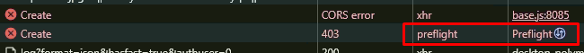

Провайдер максимус

Что было опробовано:
- Все стратегии Flowseal
- Все стратегии YTDisBystro_v2.3 (с
--wwsizeдляgooglevideo.comи без) - Все стратегии YTDisBystro_v2.4.1 (с
--wwsizeдляgooglevideo.comи без) - Все статегии UltimateFix
- Смена DNS и пробования всего подряд с включенным и без (DOH, Cloudflare, ControlD, Comss DNS, Google, Open DNS и т.д.)
Сайты с гуглвидео полностью работают, видео скачиваются и пакеты передаются. Но видео на ютубе не работает.
Куда копать дальше?
У вас блокировка от самого google.
Проксируйте jnn-pa.googleapis.com. Ещё можно попробовать выйти или войти в гугл аккаунт.
Проксировал через тор весь домен googleapis.com и его поддомены - не помогло. Аккаунты тоже не помогли.
айпишник то ваш передается в videoplayback? если нет, то сбрось кэш для начала и убедись что нет никаких проксей и прочего
после videoplayback будет строчка ip= в заголовке
googlevideo.com без проксей. Это точно
Попробовать через разные браузеры. Помню запускал ютуб на двух планшетах через один wi-fi с одинаковой стратегией дпи, на одном видео моментально запускалось, на другом вообще не хотело грузиться.
сюда то нафига его скидывать?..
ой все крч
Вы просили - я скинул. За то убедились что совпадает 
Только толку нам от этого? Как это в итоге поможет?
я не просил скидывать, а проверить совпадает или нет
убери скрины со своим ip
Есть смысл просто в hosts прописать 0.0.0.0 для этого сайта?
Без учетки видео работает?
Всегда тестируй без учетки где-нибудь в эдже.
Режим инкогнито (кэш чистый). Грузится первые 5-10 секунд и всё. Однако к сайту googlevideo обращения доходят.

Quic выкл/вкл пробовал?
Если это не заработает, значит стратегии неправильные. Если работает, то это косяк браузера/бан учетки/что-то еще.
Так у вас вероятно всего бан по IP. Тут спуфинг DPI не будет работать)
Только что попробовал включить и выключить, не хочет работать. Также пробовали различные браузеры.
Да нет же… Бан ip выглядит по другому
Бан по адресу приводил бы к таймауту. Здесь все работает.
Бан по ip выводит ошибку в браузере мгновенно, запроса на googlevideo даже не происходит
БЛАГОДАРЮ ВАС, заработало. Что мы можем сделать тогда?
Может ли быть это ДНС? Как ютуб работает через стороннее приложение? Получается это не бан по айпи?
Фритуб заработал?
Значит твой основной браузер у тебя кончился, убирай там всякие аддоны, переустанови, чисти кеш.
Фритуб на основе хромиума, так что по сути это просто браузер, только конкретно для ютуба.
Фритуб заработал, но чистые другие браузеры тоже не работают. Можно скачать чистый хромиум и проверить ещё раз?
Попробуйте отключить doh в браузере, и увидите сразу, как оно работает через днс провайдера.
DOH всё это время был выключен. Когда включал - эффект такой же. В системе включен гугл днс, но это не дох.
Пробуй. Можешь качнуть это, для тестирования самое то.
[quote=“censorliber, post:25, topic:14070”]
DOH всё это время был выключен
[/quote] Его нет смысла отключать, тем более при массовых блокировках
Скачал чистый Chromium. Ютуб также не грузит.
флаги по умолчанию
Ungoogled Chromium:

Честно говоря даже непонятно что это. Либо на вашем хабаровском провайдеры тестируют “супер” настройки для ТСПУ, что даже тор браузер вам не помогает, либо проблемы “на вашей стороне”
Попробуйте VPN, разные протоколы, VLESS и тому подобное.
Да впн всегда успеем, я хотел чисто на запрете вывезти.
Скорее второе - что должно быть, что-бы блокировать ютуб даже сквоздь тор это огромный вопрос.
Есть мнение, что проблема в самом плеере. Во фритубе используется shaka-player, который заменяет стандартный ютубовский из оболочки. И есть мнение, что конкретно какие-то адреса забанены, и плеер что-то не может подтянуть.
Кто-то может объяснить что за супер настройки такие что Freetube работает, а браузеры нет?
Скорее всего да
А в остальном тор у вас как? Хорошо работает? Другие сайты открываются и исправно работают?
Не уж то это сертификаты от минцифр? Да это звучит максимально безумно, но мне кажется скоро у некоторых особо доверчивых пользователей на “программном” уровне не будут доступны ютубчики и дискорды. А потом они будут тут бегать и спрашивать “ЧТО СЛУЧИЛОСЬ”?
Нет в системе никаких сертификатов, Даже яндекс браузера
Средне, иногда не подключается. В основном подключается. Сайты работают.
Надо начать с примитивных способов:
- В настройках сетевухи поставить автоматическое получение dns и в браузере также, чтобы от провайдера получать.
- Вписать dns от яндекса
- Перезагрузить комп, вытащить инет кабель, перезагрузить роутер.
- Если ip динамический, то перед сном выключить роутер из розетки, кабель из сетевухи, к утру включить, может ip успеет “протухнуть” и новый ip получите.
У вас то нет, а некоторым “удобство” важнее нежели сохранность собственных данных и возможно безопасности. Я очень не удивлюсь, что скорее всего РКН прокрутят такую тему, что дурачкам незаметно зашлют эксплойт через очередное обновление госуслуг, яндекс браузера, касперского и ВСЁ
FreeTube это хромиум, но он вроде прикидывается iphone или обращается к API. А ещё у него есть Fallback на Invidious API. Правда, Invidious серверов уже почти не осталось. Вот вроде из Чили ещё шевелится.
Объясняю. Плеер youtube не может пройти Challenge, т.к. нет доступа к jnn-pa.googleapis.com, и перестает загружать с googlevideo.com. Попробуйте совет со сменой динамического ip или продолжайте использовать альтернативный форентенд.
Возможно, эту проблему можно решить с помощью пользовательского скрипта, отключающего Challenge. Но кто будет заморачиваться его созданием?
Посмотрите на всякий случай список сертификатов всё-же если уже не проверяли. Может-быть каким-то образом установилось. Вы что-то скачивали перед тем как это произошло?
Это напомнило старый анекдот.
Звонок в техподдержку:
– Здравствуйте, у меня не работает интернет.
– Здравствуйте. Для начала вытащите и снова вставьте сетевой кабель, потом нажмите “Пуск”, “Панель управления”…
– У меня нет такого, у меня Линукс.
– Значит установите “Виндовс”, потом нажмите “Пуск”, “Панель управления”…
При бане по IP FreeTube не работает у меня.
Попробуйте может, разные типы мостов. Какой используете тип?
Только что загрузился с chrome как мобильное устройство - всё работает 


Плеер, однозначно. Мобильная версия лайтовая, там меньше зависимостей.
Да, плеер. Интересно если ли способы это пофиксить? И почему он начал блокироваться?
Это выдает проблему 59 секунды, проверено неоднократно. А у чела проблема вообще полного отсутствия загрузки.
В настройках запрет этот домен стоит, он заблокирован по айпи что ли?
Частный случай. Нужно копать проблему, можно начать с проверки доступа к jnn-pa.googleapis.com, как советовали выше.
Нет, не всегда. Но на него могут дропаться пакеты, вот у меня так, я этот домен отдельно проксирую.
Но этот домен важен только с логином, без учетки вообще пофиг. Хотя сейчас всё может быть и возможно внезапно домен стал подтягиваться и в инкогнито.
Скорее всего не поможет, но попробуйте пользовательский фильтр для uBlock Origin. Только после тестов не забудьте удалить.
||jnn-pa.googleapis.com/*$redirect=noopjs
Смущает вот этот лог, раньше такого не видел. Расширение какое-то или это с сайта?

Браузер чистый, возможно потому что это ангуглутый. Хотя в обычном хром та же ошибка.
также забыл добавить - я использовал подключение к другому впн, и проксировал только этот домен который был выше - ютуб также не работал и не подключался
также такое действие помогло у второго парня. У него Региональный, стк, но он в Донецке.
Запрет также у него заработал только с нестандартными плеерами ютуба.
Ого! Интересно подойдёт ли этот Windows 32-bit 131.0.6778.204-1 под вин7. А то говорят только supermium остался…
Я тестировал - не подойдёт.
Попробуйте проксировать не только этот домен. Попробуйте вообще для теста попроксировать всё, и посмотреть сработает-ли. Если нет, то я не знаю.
Очередной бан от гугла обнаружился, что ли? 
Для теста я проксировал вообще весь *.googleapis.com - и через тор и через впн - ютуб не работал. Потом я начал проксировать весь *.ggpht.com - тоже бестолку.
Потом и весь *.youtube.com - тоже не работало. Не понятно какой именно домен нужно проксировать.
В итоге у меня весь ютуб работал через впн кроме гуглвидео, но видео также не работало.
Ну попробуйте вообще я имею в виду траффик весь уж чего мелочиться.
Ну если весь трафик проксировать то конечно ютуб заработает, оно понятно 
Скорее всего причина всё же в том что: какие-то локальные провайдеры очень точечно замедлили какой-то домен и очень изящно поломали весь ютуб. Этот домен отвечал за плеер на ПК версии сайта.
Может быть он требует какого-то особенного соединения и когда видит фейковые пакеты Zapret просто отплёвывает их. И в итоге соединение сбрасывается.
Это гораздо менее топорно и эффективно чем блокировать *.googlevideo.com
Но это всё ещё лишь догадки… Но проблема точно именно у некоторых провайдеров, а не на ПК устройства. У соседей одного человека весь дом не смотрит ютуб и у всех один провайдер.
А Embed пробовали? Тут писал Ори
Я смог создать эту проблему искусствено на МГТС.
Отправил через тор пастись jnn-pa.googleapis.com, в итоге видео на ютубе не грузятся. Хотя запрет работает если убрать этот домен из тора.
При этом видео прогружаются, то есть статус 200.

Если через VPN его прогнать - грузится оооочень медлееенно.
При чем в обоих случаях меня посылает именно сайт ютуба
Видео грузятся первые 10-15 секунд - а потом бесконечная загрузка.
Не помогло
После того как через hosts Заблочил этот домен ютуб начал выдавать тоже самое


Может провайдеры айпи его меняют, надо проверить будет
попробуй пингануть jnn-pa.googleapis.com и вручную добавить адрес в hosts
возможно нужен айпи от страны нахождения сервера. (у вас заметьте европейские сервера, например швеция)
cors error как бы намекает
а это не может быть связано с origin trials?
Все-таки гуглапис. Пробовал его через цензор трекер?
врубите принудительно кодек h.264, авось поможет
Да забей, “РКН победил” )) Хотя, по идее, при чем тут РКН?
Тут стандартная ситуация, про которую я уже не раз писал (но никто меня не слушает) - игрались с проксями, впнами, словили бан от гугла. Потом зачем-то запрет решили попробовать. Как-будто он поможет
Коооонеееечно. Абсолютно такая же ситуация как у ОПа. Какие-то видосы с пол-пинка грузит даже в 8к, какие-то даже не начинает, какие-то еле тянет, какие-то первые 5-10 секунд грузанет и встает как вкопанный. Любой бразуер, под учеткой, без учетки, смена мак-адреса, удаление куков, смена браузера, юзерагента, как угодно еще, с DOH или без - ситуацию не меняют. Пользовался своими стратегиями, до поры до времени работало. После кручения на стороне провайдера все сломалось. Через прокси с горем пополам в 360p - работает, но стоит прокси отключить - помянем. Вы говорите “Стратегия неправильная”. Стратегия взята прямиком с блокчека. Даже дефолтный preset_russia который идет с Запретом - поработал первые 15 минут и перестал. Стратегия значит неправильная или бан за прокси/ВПН? Ну-ну. Видимо бан по железу, не иначе.
Надеюсь на вашу улицу тоже такой “праздник придет”, и вам будет так же весело, тогда и расскажите про баны за прокси/ВПН.
Вы специально зарегались, чтобы эту херь написать? ) С почином, как говорится.
Придет - разберемся, не надо меня пугать )
Да.
Не разберетесь.
У меня тоже нет никаких Create и GenerateIT. Проверил в 3-х браузерах. Хрен знает, что это такое. generate_204 есть и все.
@censorliber Вот это видео работает с запретом?
да вроде есть)
Спойлер
Да говорю тебе - нет у меня вообще запросов к гуглапису
Разобрался, они появляются при открытии youtube.com на странице видео их уже нет, а я там смотрел, насмотревшись скринов выше )
Примерно с 3 часов ночи ютуб прекратил работать от слова совсем через GDPI. В логах NS_BINDING_ABORTED. Пров - РТК.
Поигравшись с настройками GDPI получилось запустить ютуб в прежнем режиме - проверял на ранее блокирующихся видео. Из чего могу сделать предположение что добавили ещё одну “чёрную коробочку” для фильтрации трафика. Что изменил - добавил ttl на 1 хоп (стало 3), изменил fake-gen на 14 и сменил адрес днс сервера на клаудфлэровский ipv6. Скрипт батника прикладываю в теле сообщения:
@ECHO OFF
PUSHD "%~dp0"
set _arch=x86
IF "%PROCESSOR_ARCHITECTURE%"=="AMD64" (set _arch=x86_64)
IF DEFINED PROCESSOR_ARCHITEW6432 (set _arch=x86_64)
PUSHD "%_arch%"
:: Генерация случайного 58-байтного hex-числа через PowerShell (116 символов)
for /f %%i in ('powershell -command "[byte[]]$bytes = (1..58 | ForEach-Object { Get-Random -Max 256 }); $randomHex = -join ($bytes | ForEach-Object { $_.ToString('x2') }); $randomHex"') do set "hex_value=%%i"
start "" goodbyedpi.exe -9 -e1 -q --fake-gen 14 --fake-from-hex %hex_value% --set-ttl 3 --dnsv6-addr 2606:4700:4700::1111 --dns-verb --blacklist ..\russia-blacklist.txt --blacklist ..\russia-youtube.txt --blacklist ..\discord.txt
Скрипт скопировать, вставить в новый файл с расширением .CMD, где лежит предыдущая версия GDPI и запускать с правами администратора. Отпишитесь кому помогло запустить ютуб на РТК эта версия скрипта.
похоже на то, что через тор оно не правильно проксируется. ошибки create и generateIT это 100% jnn-pa. Поробуйте ещё signaler-pa.youtube.com запроксировать
Изначально у вас днс ошибка, остальные параметры меняли просто так или же без них тоже не работало?
Сегодня прилетел блок от гугла на одну из /24 подсетей. Соседние в норме. Причем, блок и на локальный кэш, который стоит до тспу. Блок не работает, если зайти на любую учетку.
Ютуб, почему-то, вместо сообщения “залогиньтесь, чтобы доказать, что вы не бот” выводит просто кружок.
как вы баны ловите ?
Эти блокировки уже были опробованы в августе и на форуме расписаны способы запрета плееру в браузере на них ходить.
Кто бы знал. В этой /24 сети зоопарк, и нат, и физики, и юрики.
С чего вы сделали вывод что в днс была ошибка? Я сменил nextdns ipv6 на cloudflare dns ipv6 и прочие параметры, о которых написал в сообщении. До сегодняшнего дня с предыдущими настройками всё работало как часы, поэтому пришлось менять в том числе и адрес редиректа днс в параметрах запуска GDPI.
Надо тему переименовать, ркн то не при чем иначе бы тут уже на форуме был сущий кошмар, вот когда фейк гугла сломают тогда да
Лучше удалить, т.к. дублирует существующие.
Запросы к гуглапису идут с авторизацией, иначе проблема 59 секунд. У меня они есть всегда, даже на видеве.
Я не увидел отдельной ветки для бана гугла, думаю это отличное начало
бан гугла это отличный пример того что гуглу абсолютно пофиг и на штрафы и на российкий маркет, ну и на политику тоже. для них эти снижения процентов и долей рынка только на руку, потому что меньше будет нахлебников без рекрамы в регионе. скоро будет полный 403 на гуглвидео со всех ру ип я чую
так а причем тут российский маркет, если там весь реддит завален был подобными темами.
тот же цензор трекер при добавлении адреса не обязательно проксирует трафик. не вижу чтобы автор это пробовал (как и остальные советы)
Рапорты о блокировке подсетей GGC:
https://ntc.party/t/%D0%B7%D0%B0%D0%BC%D0%B5%D0%B4%D0%BB%D0%B5%D0%BD%D0%B8%D0%B5%D0%B1%D0%BB%D0%BE%D0%BA%D0%B8%D1%80%D0%BE%D0%B2%D0%BA%D0%B0-youtube-%D0%B2-%D1%80%D0%BE%D1%81%D1%81%D0%B8%D0%B8/
Обсуждение:
https://ntc.party/t/%D0%BE%D0%B1%D1%81%D1%83%D0%B6%D0%B4%D0%B5%D0%BD%D0%B8%D0%B5-%D0%B7%D0%B0%D0%BC%D0%B5%D0%B4%D0%BB%D0%B5%D0%BD%D0%B8%D0%B5-youtube-%D0%B2-%D1%80%D0%BE%D1%81%D1%81%D0%B8%D0%B8/
Проблема одной минуты:
https://ntc.party/t/%D0%BD%D0%B5-%D0%B3%D1%80%D1%83%D0%B7%D0%B8%D1%82-%D0%B2%D0%B8%D0%B4%D0%B5%D0%BE-%D0%BD%D0%B0-%D1%8E%D1%82%D1%83%D0%B1%D0%B5/
Ну и десятки подобных.

Так до сих пор и не понял в чём проблема. Если проблема одной минуты, то добивайтесь статуса 200.
На последенем скрине видно что гугл отбрасывает домен jnn-pa.googleapis.com с ошибкой 403.
Я вижу. Если у вас проблема загрузки одной минуты, то:
Тор, как написал, не подходит.
Адрес гуглаписа нормальный выдает? Может там фейковый резолвится.

Я уже вручную менял на те что указаны в списке. И с браузера на сайт вполне себе заходит нормально. Так что айпи точно правильный.
а нельзя просто использовать… другой клиент который не ломится на этот домен если он столько проблем вызывает? сами же говорили что тот же freetube работает. а есть еще всякие yt-dlp/invidious/piped/revanced/newpipe/smarttube которые делались от таких же ненавистников левых доменов гугла вроде этого
А через embed работает? Типа такого https://www.youtube.com/embed/IQqtsm-bBRU Либо попробовать через embed + заблочить jnn-pa вообще.
Или вообще переключить на мобильный режим https://m.youtube.com/?app=m&persist_app=1 (переключение на декстоп: https://www.youtube.com/?app=desktop&persist_app=1)
Ну, остается вариант только проксировать или использовать фритуб.
Судя по скрину, ошибка cors, то есть где-то отлетает кроссдомен. То есть, сайт пытается обратится в никуда, нужный заголовок ему не возвращается. Это вполне вероятно прикол самого гугла, блокировки тут не при чем.
Тему то читал? )
Про ембед он проигнорил (я два раза писал), а с мобильной - все работает.
Есть подтверждения работы через проксирования через особо настроенный Censor Tracker - это он видимо тоже не пробовал, через тор гоняет
один упоротый тут принципиально отказывался от проксирования, а второй - упоролся в ТОR. Не мешайте ему )
Занят человек, слава flowseal не даёт покоя
Конечная цель - чтобы работало без ВПН, прокси и сторонних клиентов.
И не только его слава )) 2-я иссуес снизу, ультимейт конфиг под номером 31 
Ссылка на тему с архивом Быстро зачем-то, хотя есть тема с актуальными версиями
Ну и вишенка на торте название zapret - видимо фантазия вообще на нуле, ничего лучше чем взять название чужого продукта не придумал, чтобы людей еще больше запутать.
И самое смешное
так как не имеет прав на программу Zapret
А он, видимо, имеет, раз свой продукт так же назвал )))
Э, нет, фантазия тут как раз на месте. Как думаешь, если внезапно популярность этой сборки взлетит, что что будет в топах поиска? 
Люди будут искать bol-van/zapret, а находить censorliber/zapret
Тут хитрый план.
Это не фантазия, а тупость и банальщина.
Чем тупее и банальнее название, тем выше шанс попасть в топы.
Видимо, автору лавры flowseal покоя не дают.
Если он не бросит всем этим заниматься - это к лучшему. Флоу походу давно на сборку положил большой и толстый, обнов 1,5 месяца не было от слова совсем.
Одно отличие - пользователям ОС ниже 10-ки это удовольствие доступно уже не будет.
Наконец-то человек смог проверить - это работает.
В чем принципальная разнциа embed?
Embedded - это встроенное видео. Почему embedded работает, а обычный вариант просмотра нет - хз. Это уже к самому ютубу вопрос. На реддите пишут, что jnn-pa - это вообще трекер для сбора статистики. Казалось бы, с фига ли он влияет на воспроизведение?
Я не могу посмотреть трафик, он тоже подключается к jnn-pa.googleapis.com?
Да, я у себя в консоли вижу запросы к jnn-pa даже через embedded. Однако, даже если полностью заблочить этот домен, оно по-прежнему работает нормально.
Подтверждаю. Идут те же запросы, туда же
Отпишусь сам себе, для статистики. Как будто бы совет с проксированием googleapis.com улучшил ситуацию, хоть и не до идеального, но хотя бы до удобоваримого состояния. Сижу на Firefox, относительно недавно он сам по себе несколько тормознутым стал, не говоря уже о замедлении/блокировках.
В целом если тестить на браузерах на движке хромиум, то даже без всяких проксирований работает достаточно бодро (не из под аккаунта), но не идеально. Некоторые видосы буферятся (в начале) с задержкой, но если пошло, то как правило идет нормально.
Из текущих проблем: не всегда стартует видео сразу (даже на хромобраузерах), иногда подвисает если кликнуть куда-нибудь в середину. При этом среднее время ожидание на буффер в районе 6 секунд, может быть больше или меньше.
Кручу только --filter-tcp=443 по хост листу list-youtube.txt, но каких-то значимых улучшений не вижу.
Использую строчку из preset_russia, т.к. моя предыдущая совсем себя плохо вести стала, а предлагаемая на удивление хорошо идет. Но что менять текущие значения, что добавлять что-то свое или убирать - либо толком ничего не меняют, либо становится хуже.
Я бы остановился на том что имею, но если есть идеи как ускорить процесс буфферизации, буду рад почитать.
Периодически проскакивают NS_BINDING_ABORTED по серверам типа rr7---sn-gvnuxaxjvh-c35s.googlevideo.com но у них метод POST, а не GET, что в принципе не должно быть проблемой.
По GET отваливаются только googleads.g.doubleclick.net и google.com
уменшить объем фейка или выпилить его полностью (или заменить на хекс)
это при условии, что оба пула из videoplayback mn= доступны
У них и должен быть POST
Можно еще вот такой кардебалет только на этих GGC применить )
С таким конфигом тспу уже само должно видосы генерировать по запросу 
У меня работает ) Причем лишь на полсекунды-секунду медленнее чем из Быстро. Вешал на нее 2 своих локальных пула
Я бы удивился, если бы не работало. Там в сплите такой рандом, что вряд ли на коробке смогут развернуть алгоритм.
И причем это все еще и дисордером ) Мы с Айноу уже это обозвали протокол ZMESS  У нас то с фантазией все в порядке
У нас то с фантазией все в порядке 
Ну zaмес, я понял 
Жесть, мужееееки.
Как я говорил у меня preset_russia.
Внес некоторые изменения в него от себя, в частности TCP/UDP вернул из своего старого конфига, т.к. те что в пресете - немного тупорылят.
Те что в самом пресете, под Ютуб, - оставил, но подрезал, добавил ttl=4 (как будто бы так стабильнее, если больше то начинает срать ошибками, если меньше 3-ёх то мало, на 3 подвисает чаще, на 4 как будто бы больше стабильности).
На свои же стратегии по TCP/UDP добавил хостлист exclude - list-youtube, т.е. они видимо мешают, а может быть дело в расположении стратегий. Это я не учитывал, конечно же. Но сейчас передвинул Ютубные стратегии наверх.
Ваш Кардебалет как будто бы слоупочный у меня. Я попробовал класть его в самый верх, пробовал удалять из хост листа googlevideo.com, но либо без результата, либо хуже.
У меня сейчас наблюдается некоторый затуп прогрузки всего интерфейса при первом заходе на ютуб, НО когда все пропёрживается, то начинает нормально работать, практически идеально, хотя пока рано так говорить, мне нужно больше времени. На удивление заработали и Ютуб Шорты, раньше я дальше 3-го шорта не мог уйти, все зависало как вкопанное, сейчас спокойно 10 подряд могу прокрутить и норм.
В любом случае спасибо за подсказки, иначе бы я так и бился лбом в стену, плюс узнал кое-что новое и на что обращать внимание. На мой взгляд инструкция к запрету крайне убогая, там не все написано и не все сказано, то ли умышленно, то ли по неумению писать инструкции.
Сейчас мой конфиг выглядит примерно так, на сколько тут все плохо - понятия не имею, т.к. делаю по сути на рандом (изменил - сохранил - рестартанул сервис - проверил). Наверняка тут еще многое можно оптимизировать и подрезать.
Спойлер
–wf-tcp=80,443 --wf-udp=443,50000-50099 ^
–filter-tcp=80 --dpi-desync=fake -dpi-desync-ttl=2 --dpi-desync-fooling=badseq --dpi-desync-badseq-increment=0x80000000 --new ^
–filter-tcp=443 --hostlist=“list-youtube.txt” --dpi-desync=fake,multidisorder --dpi-desync-split-pos=1,midsld --dpi-desync-repeats=11 --dpi-desync-fooling=md5sig --dpi-desync-fake-tls=“tls_clienthello_www_google_com.bin” --new ^
–filter-udp=443 --hostlist=“list-youtube.txt” --dpi-desync=fake -dpi-desync-ttl=4 --dpi-desync-repeats=9 --dpi-desync-fake-quic=0x00000000 --new ^
–filter-tcp=443 --hostlist-exclude=“list-youtube.txt” --dpi-desync=fake --dpi-desync-fooling=badseq --dpi-desync-repeats=6 --dpi-desync-badseq-increment=0x80000000 --dpi-desync-fake-tls=“tls_clienthello_www_google_com.bin” --new ^
–filter-udp=443 --hostlist-exclude=“list-youtube.txt” --dpi-desync=fake,disorder --dpi-desync-split-pos=1,midsld --dpi-desync-repeats=6 --dpi-desync-fake-quic=“quic_ietf_www_google_com.bin” --new ^
–wf-udp=50000-50099 --filter-udp=50000-50099 --ipset=“ipset-discord.txt” --dpi-desync=fake,tamper --dpi-desync-any-protocol --dpi-desync-fake-quic=“quic_initial_www_google_com.bin”
P.S. Ростелеком, Москва, кстати.
Надо заметить, что nfqws в рутере с тем же конфигом не дает этих лишних полсекунды-секунду, хорошо работают альтернативные приложения, в том числе андройдовые по вайфаю.
Если не самый, то один из простых случаев
AtrM_preset.cmd (2,2 КБ)
youtube.txt (404 байта)
block1.txt (79 байтов)
block2.txt (119 байтов)
quic.bin (144 байта)
tls_goog.bin (240 байтов)
tlsmix1.bin (1,0 КБ)
Нужные домены вносятся в block1.txt или в block2.txt
Ваш конфиг не работает от слова совсем. И да, я исправил ошибку с названием quic-файла (в конфиге он quic.bin, у вас при скачивании он называется quic_test_00.bin).
winws запускается, но сайты не алло. Вообще.
Моя белеберда пока что около-идеального, особенно в сравнении с тем что было до того как я написал сюда.
С моим конфигом это примерно так выглядит: Imgur: The magic of the Internet
То есть до 4к все достаточно быстро, на 4к и 8к есть затупы не критичные.
Плюсом сюда же - Firefox, который сам по себе проигрывает хромиумным браузерам по скорости.
Горстка нужных сайтов там вносятся ручками в block1.txt или в block2.txt а миллиарды не нужных пускай не работают, фиг с ними.
Копипастить только из спойлеров не рекомендуется.
Потому что
Текст туда помещен не как код, часть двойных дефисов сконвертилась в тире, кавычки из бьюти-спа-салона с закрученными ресницами, ttl=2 не сработает из-за одинарного дефиса вместо двойного, в конце повторён
--wf-udp который 1) глобален и указывается лишь единожды в самом начале и 2) тем, кто не использует дискорд вся широковещательная история с 50000-50099 не нужна в приципе, вместе с присунутым туда гуглофейком.
Нижестоящие эксклюды в такой схеме не нужны, т.к. пакеты под эту задумку уже были выловлены вышестоящим профилем и “эксклюдированы”. В целом весь веб предлагается открывать гуглофейком, но только на этом далеко-то не уедешь, к сожалению. Макрос %~dp0 не применен, листы не загрузятся. Можно плюнуть, до тех пор пока.
Ладно, вы правы. После внесения руками оно заработало. Но работает он так же как и мой кривой конфиг. То есть по ощущениями разницы никакой. Странно только что Ютуба в списках нет. Запрет по моему изначально и начали форсить вместе с GDPI как раз по причине неработоспособности Дискорда с Ютубом.
Я исправил ошибки и прочее еще тогда. Кидал я его скорее как демонстрацию в моменте тестирования по этому случайно нагенерил несколько ошибок, которые ни на что не влияют, и которые были исправлены спустя минут 5 как был опубликован пост.
Пути я специально вырезал. Это именно что работающий сервис-Запрет + конфиг “C:\Zapret\winws.exe” @C:\Zapret\config.ini
Мне так проще чем держать открытое приложение и проще чем ковырять либо параметры для самого процесса в строке пути процесса или пересоздавать процесс каждый раз. Но при этом не нужно запускать его как приложение отдельно. Я просто открываю notepad++, меняю параметры и рестарчу сервис.
Они тоже были созданы до того как я перетащил нижние строки под Ютуб наверх. То что они есть или их нет уже погоды не делает.
Конкретно у меня все применено. Ввиду того что это конфиг, использующий абсолютный путь, то %~dp0 не работает. Да и вам абсолютные пути до приложения на моих дисках знать не обязательно.
Зачем вам на РТК этот изврат, если есть готовое решение, на РТК проверенное и работающее?
Знаний писать свои конфиги у вас пока явно маловато, если у вас до сих пор трэш-флуд на портах дискорда и тампер )
GGC добавлены через --hostlist-domains= и не требуют списка, а остальное в youtube.txt
работает он так же как и мой кривой конфиг. То есть по ощущениями разницы никакой
В браузерах наверное никакой. Но это на РТК и это пока. Со временем, вероятно, наткнетесь на какие-то затруднения и придется усложнять стратегию, плюс к этом ситуация вокруг YT может как-то измениться, вануатизироваться.
Поговорка есть такая: работает - не трогай.
Ню-ню. Я уже прочитал, как оно “работает”, особенно судя по вашему первому посту на этом форуме, с руганью, сарказмом и проклятимями. Видимо, это от “хорошей работы” )
Видео выше выкладывал. Можешь чекнуть.
Если это плохо, то я хз.
Вы мне подсказали - спасибо, я поковырял - стало лучше. Значительно.
Здорово. Дальнейшие мои действия какие?
Один предложил свой “правильный” конфиг. Хорошо. Будет что-то в качестве запасного варианта. Я выше отписался что он не чувствуется быстрее моего. Следовательно что? Нет смысла его ставить если сейчас все работает. Не так ли?
Вероятно и ваш тоже не будет быстрее работать потому что теперь все упирается в доступность сетей и скорости работы браузера, а никак не в ТСПУ.
К тому же логика подсказывает мне что чем больше в конфиге написано, тем больше ресурсов отжирается. Даже если не значительно, но больше, то зачем мне это? В ваших конфигах, даже если они рабочие и/или не отличаются по быстродействию (как минимум пока что), скорее всего более ресурсозатратные. Не так ли? Может я ошибаюсь, мне лень проводить какие-то замеры и т.д.
Я предпочту на текущий момент остаться на том, на чем я сижу.
zapret на любой платформе отжирает крайне мало ресурсов. Прямой связи с объемом конфига нет, есть связь с тем насколько он корректно составлен. Если грамотно сужается область воздействия на трафик, то потребление ресурсов, и без этого малое, может даже уменьшиться, хотя массивность выражений, которыми область воздействия описывается, может и увеличиться.
Что дальше делать? Наслаждайтесь жизнью, пока это возможно. Если заметите какие-нибудь никем не описанные аномалии, то поделитесь с нами.
Спасибо. Принял.
Вопрос тем не менее возник. У вас в конфиге что вы выше кидали в строке для ютуба строка начинается так:
–filter-tcp=* --hostlist=“%~dp0youtube.txt” --dpi-desync=fake,multidisorder
Вот эта --filter-tcp=* - звездочка вместо нумерации порта, это норма?
Он по всем портам будет работать?
Опять же документации нигде нет вменяемой, по этому и спрашиваю. В других местах такого не встречал.
Звездочка — это норма, она означает любой порт в фильтре из тех, по которым ваш winws через --wf подключен к трафику. В общем случае, это 80 и 443. Этот прием можно использовать если где-то когда-то вам понадобится кастомный порт или можно не исключать 80 порт для редиректов, например. В документации это все же описано - это виндовый ридмик в дополнение к основному.
Бред чистой воды. Ваш трэш-флуд на порты дискорда жрет больше, чем 10 таких батников.
Да оставайтесь на чем хотите, мне то что. Я уже давно зарекся людям вроде вас что-то советовать, в очередной раз убедился
Вроде исправил уже.
И на том спасибо )
Хорошо, я проверил.
Провёл небольшие измерения по трафику и IO диска, и мой конфиг действительно больше поджирает, но это если смотреть на микроуровне так сказать. С моего конфига выше IO Rate в 2-3 раза но там исчисление в килобайтах, условные 20 средних КБ/с конфига i-no, против 60КБ/с моей писанины, как бы больше, да, полностью согласен, но разница мизерная, правда у товарища в конфиге и Дискорда нет, следовательно и данные никуда не гоняются с Дискорда. То есть Ютуб то работает, но конфиг все равно придется перековыривать под Дискорд и тут уже трансфер и количество данных будет под вопросом. То есть измерения не совсем легитимные. И это я еще не проверял работу MS Store и прочих сервисов. А то ж оно как бывает, в одном месте работает, в другом - уже нет. Мне на это неделю нужно чтобы убедится что все ок, а пока что поверхностные наблюдения такие.
Будет время, я еще поковыряюсь.
Вы не поймите меня не правильно, я рад помощи, и опять же без вас двоих я бы вчера не стал 3 часа пердолингом этим заниматься для получения отличного результата, но я понятия не имею с кем я имею дело. Вы для меня до поры до времени такие же ламеры, как и я для вас. Вопрос в состоятельности и понимания системы. Сейчас такое время что кругом одни д*****бы. Я же просто пытаюсь разобраться чтобы в определенный момент не остаться ни с чем и чтобы была возможность ручной настройки/доводки. Я не люблю быть зависимым от других, не разбираясь в вопросе.
Ну тогда открывайте документацию которую болван детально расписал и читайте
Я там ничего не понял практически.
Вот к примеру
dpi-desync-fooling -
дополнительные методики как сделать, чтобы фейковый пакет не дошел до сервера.
none md5sig badseq badsum datanoack hopbyhop hopbyhop2
Если запустить winws.exe из cmd то там уже написано:
can use multiple comma separated values.
То есть оказывается можно использовать сразу несколько методик, но узнаешь ты это в каком-то очке, а не в readme. Возможно это где-то и написано, но явно не на видном месте и не там где должно быть.
Или вот еще пример:
–dpi-desync=[,][,<mode2] ; атака по десинхронизации DPI. mode : synack syndata fake fakeknown rst rstack hopbyhop destopt ipfrag1 multisplit multidisorder fakedsplit fakeddisorder ipfrag2 udplen tamper
Но при этом часть из них только под ipv6 или только под ipv4 или еще какая-то ситуативщина, которая может и написана, опять же, где-то в конце всего документа, но явно не там где должна быть.
Я ни в коем случае не хочу принизить или обесценить чей-то труд или что-то, но вот то как составлена инструкция, на мой взгляд, это типичный пример того, как инструкции писать НЕ следует. Структуризация информации просто отвратительная.
Я не буду исключать что это я тупорылый функционально неграмотный обезьян, который не понимает написанного, но даже по работе, за 10 лет, пытаясь выкупить по инструкции для чайников что от меня требуется, я порой нихрена не понимаю что от меня требуется. В конечном итоге я пришел к мнению что люди не умеют писать инструкции.
На текущий момент вся инструкция выглядит как технический документ, уровня тех.паспорта или что-то в этом духе.
На мой субъективный взгляд тупорылой обезьяны, информация должна быть примерно такого содержания:
dpi-desync - делает то-то, нужна для того-то. может использовать функции ф1, ф2, ф3, ф4
ф1 (ipv4/ipv6) - это то-то
ф2 (ipv4/ipv6) - это то-то
ф3 (ipv6) - это то-то
Можно миксовать ф1 и ф2, ф3 нельзя миксовать.
И бла бла бла.
Вот что такое структуризация. Ты получаешь ответ по каждой функции сразу же, а не где-то в начале/середине/конце.
Справедливости ради, инструкция к GDPI в 100 раз проще воспринимается. Хотя и сам GDPI в разы более слабый инструмент.
бинго
Нене, это он уже нашел. Ему еще хотелось по сути сжатый курс об устройстве TCP и сетей в целом. Но уж этого-то в ридмике не будет. Никаких Zapret Bible: How to Circumvent Anything O’Reilly Bestsellers в планах нет)
Болвану нужно книгу написать “Обходы блокировок для чайников. Путь от нуба до профессионала”.
Продаж будет миллион 

Такое только в наказание за содеянное понуждать писать, а потом еще и запретить издавать)
Думаете, он будет книжки от каких-то ламеров, которые для него все люди на этом форуме, читать? Зачем это ему? 
Думаю, что все не так плохо, в данном случае.
Любому, кто хочет разобраться, придется начитывать довольно много. А потом еще. И еще. Пока не расхочется разбираться.
Не надо издеваться, пожалуйста. У меня были какие-никакие курсы Cisco по сетям, только было это лет 13 назад. Что такое пакет, из чего он строится, модель OSI, СКС и прочую начальную щелуху я знаю и осведомлен как это примерно работает. В дебри о том, чего там столько бит занимает, я не лез. То что тут инструкция даёт какую-то поверхностную информацию которую поймет только сетевой архитектор, 20 лет работающий по этому направлению - это факт. Но я не сетевой архитектор. А обычному, даже толковому юзеру, эта инфа не пришей к п*де рукав как говорится. А методом тыка любой кретин может отработать, даже я смог.
Я-то не издеваюсь, вижу, что и так разберетесь. Это вон KDS в человечестве окончательно разочарован) Ну, не без оснований.
Ну для этого надо что бы болван хотя бы накидал книг, что читать
Я помню, он ссылался на получение профильного высшего образования… Попробуйте обратиться к нему за методическими пособиями, может, у него сохранилось что-нибудь)
Хотя если в ваш любимый поисковик вы зарядите что-то типа “методические пособия для сетевых инженеров”, то буквально на первой странице, может даже первой ссылкой выпадет подборка книг.


Дальше можете спросить у того, кому доверяете, насколько такие книги вам подойдут. Я сам их пока не читал, даже не просматривал еще, но пошел бы примерно таким путем.
Чуть ниже, буквально, написано, в разделе по атакам десинхронизации.
Режимы дурения могут сочетаться в любых комбинациях.
--dpi-desync-foolingберет множество значений через запятую.
Все там же
Методы могут сочетаться в различных вариантах.
Мануал составлен хорошо. Не идеально, но хорошо. Всё структурировано, понятно. Еще когда был старый вариант я разобрался с первого раза.
Это так не работает. Это техдок, а не мануал. Если хочешь мануал - либо сам пиши, либо попроси кого-нибудь написать. Только вот в чем загвоздка - мануал будет раз в пять запутаннее из-за переборов разных комбинаций и объяснений работы тех или иных функций, и желание его читать будет еще слабее.
Софт ориентирован на продвинутых, потому что в нашем случае нельзя создать одну большую красную кнопку, которая делает хорошо.
Просто забей, прими как данность, настрой и забудь. И по возможности не заходи сюда. Сэкономишь как минимум кучу нервов. Тут что-то типа секты с принципами дедовщины, посвящение в панки и т.п. дичь, просто кучка троллей самоутверждается. Полистай по диагонали форум, убедишься.
Что касается настройки, то поподставляй чужие пока не заработает, только убедись, что расставлены ttl для tcp и cutoff для udp, если их конечно в очередной раз не переименовали. На производительность забей, оно либо работает либо нет.
Просто забей, я вроде инженер уж скоро 20 лет как (наверное доживу), и сети вроде в общем и целом понимаю, но главное знаю как должна выглядеть документация, так вот эта херня это сочинение как летом с бабкой корову доить, а не документация.
Танненбаума читайте, сети хорошая, операционные системы хорошая, распределенные системы - вода, не читайте, и Олиферов не читайте, такое себе. Ни те, ни другие в настройке запрета никак не помогут.
Так может это и хорошо? А то каждый начнет красные кнопки делать и получится очередной бардак
Хотя, он уже начался… на том же гитхабе от “запретов” глаза разбегаются ) За что хвататься неискушенному пользователю - фиг его разберешь
И да и нет. Мне тем не менее подсказали, причем сходу, вокруг да около никто не ходил, и куда копать, и накидали еще рабочих стратегий на всякий. Так что не совсем правда. За спрос денег не берут. Да и по вопросам консультируют.
Не совсем понимаю зачем. Тут половина постов совсем детские. Например вон в соседнем треде человек не в состоянии запустить Блокчек. Мне во-первых туда и заходить не нужно. Во-вторых уж Блокчек то я запустить могу. Ну типа, зачем всё читать? Даже то, в чем я не нуждаюсь. Это не так работает. У тебя есть проблема со здоровьем - ты идешь к конкретному доктору. Если у тебя заболит жопа, ты же не пойдешь к стоматологу, верно? Ну вот та же история. Меня проблемы других не особо волнуют в конкретный момент. У меня была проблема почему конфиг перестал работать. А понять принцип работы DPI и его обхода мне проблематично без практической части. И вот эти вот “да не парь мозги просто скачай рабочий конфиг” меня не совсем устраивают. Мне если надо я своего добьюсь, как и всегда. Меня даже незнание языка программирования не останавливало от того, чтобы переписать часть программы.
Это тоже так просто не работает, как хотелось бы. Изначально у меня и GDPI работал изумительно. Потом его стало не хватать. У знакомого было много времени по этому он собрал стабильный конфиг сам, когда их еще не было, и так я на нем и сидел, пока не прилетела блокировка Дискорда совместно с более усиленным замедлением Ютуба который похоронил тот конфиг. В обсуждениях часто светились конфиги других людей, но они были или не рабочими или бредовыми даже на мой ламерский взгляд. С чего собственно я и начал задавать вопросы а почему так, когда еще неделю перед этим пытался сам все настроить, но ничего не выходило.
Согласен, и нет. Лучше хоть что-то чем ничего. Я вот, честно признаться, в душе не е** что такое маркеры для dpi-desync-split-*. Ну то есть, я вроде как понял, но каких-то примеров нет, чтобы удостоверится что я правильно понял. В частности проблема конкретно ЭТОЙ инструкции, это то, в каком майндсете она написана. Её поймут только люди с таким же восприятием информации и опытом. У меня же, к сожалению или счастью, не такой же способ восприятия и анализа информации, по этому эту инструкцию я осиливать даже не то что не хочу, мне от неё несколько плохо.
Ты приходишь к проктологу, а он тебе с порога: ты не проктолог и даже не медик, я таких не лечу, иди учись на медика в универ, книги почитай. И ты с больной жопой идешь поступать в универ? Или все-таки идешь к нормальному врачу?
Или устанавливешь mpv и вместо того чтобы как нормальный человек mpv.conf править, идешь учить питон, yt-dlp же нужен, а потом сишечку там еще ffmpeg, а там гора математики внутри, идешь разгребать вышку…
Это называется “стокгольмский синдром”. Манипуляция на чувстве неполноценности. Все нормально, человеком ты быть не перестанешь независимо от результата. Но полученный опыт ты не сможешь переиспользовать. Причем, прикол в том, что даже в рамках этой же программы. Раньше были одни опции, потом другие, теперь вот третьи сочинились.
Насколько я понял, там всего три базовых опции для tcp: fake - подсунуть чужой “пропуск”, split - порезать свой пропуск на несколько кусков, disorder - показывать разрезанный пропуск в обратном порядке. Все остальное это вариации трех вышеперечисленных, плюс второстепенные и третьестепенные, если нарисовать сводную табличку истинности или хотя бы дерево зависимостей этих опций, то все станет простым как табурет. Поэтому такое сопротивление в плане нормальной доки, вся магия тут же сдуется.
Если не лень разбираться и сможешь такое провернуть - станешь героем года.
У меня кстати активно курочили в сентябре, все ломалось, а потом вот примерно с начала октября и по сей день все работает на старой версии.
Маркер - это точка отсчета, а цифра - это сдвиг. Т.е. sld-3 - это на 3 байта влево от домена второго уровня.
Я не в этом смысле. Там по сути так и написано.
Я не понимаю что Запрет делает при этом.
Да, я тупой, а примера там нет.
Есть некоторый сайт, допустим google.com, который будет инкапсулирован в огромный пакет, который будет представлен в шестнадцатеричной системе (вроде бы на 128 байт, да?), где маркер определяет только часть с доменом (google, в случае с sld) и работает в этом месте.
К примеру часть пакета 1234567890ABCDEF где ABC это и есть первые 3 байта домена google)
Он сдвинет только первые 3 байта домена а между ними будут нули? 1234567890ABC000DEF
Или он просто наслоится на то что перед ним стоит, сместив те на свое место? т.е. сделает вот так 1234567ABC890DEF
Добавит 3 байта перед доменом и сдвинет их? 1234567000890ABCDEF
Сдвинет весь домен на 3 байта? 1234567ABCDEF890
Да, вот столько вопросов только по одной функции. И так с каждой. А ответа - нет. Потому что примера нет.
Конечно это все можно сидеть, наверное, с Вайршарком визуально отслеживать, тогда будет проще понять что происходит с данными.
а можно пример уже существующей “хорошей доки” по обходу блокировок, по вашему мнению?
неужто китайские гайды по настройке vpn?)
Пошлет 2 байта в одном пакете, а остальное - в следующем. Но это только если сплит. С дисордером пошлет сначала то, что дальше 2-го байта, а потом оставшиеся 2.
Нули (или не нули) - это с фейками, которые тоже в отдельном пакете посылаются.
С секьюовл все еще интереснее )
Всем привет! Я написал скрипт который позволяет автоматически открывать видео в embed формате в новой вкладке. Это может помочь людям с ошибкой 403.
Я обнаружил, то если отключить UblockOrigin и uMatrix ютуб начинает работать с отключённым gdp, с gdp не работает
С UblockOrigin и uMatrix грузит и показывает только одну минуту любого видео
Попробуйте исключение добавить в ublock @@||jnn-pa.googleapis.com^
Для нормальной работы доступ к jnn-pa не должен ничем блокироваться и выдавать при заходе на youtube.com 2 ответа - Create и GenerateIT с ответом сервера (статусом) 200.
Если на этой странице запустится предпросмоттр любого видео - будет (а иногда не будет) еще эти 2 ответа.

Про переходе с этой страницы непосредственно к просмотру видео - этих запросов уже быть не должно. Если у вас они есть - значит у вас что-то явно не так.
Пишу как человек, который никогда никаких банов от гугла не ловил и у которого все работает без минутных ограничений и т.п. во всех браузерах, как с логином так и без. Во всех uBlock Origin стоит естественно, с листами от RUAdList
Мы пробовали и блокировать через юблок и через хостс - всё бестолку
Это не блок, а исключение. Он пишет, что при включении ublock у него проигрывается только 1 минута - скорее всего, jnn-pa попал в какой-то фильтр по ошибке (т.к. это, фактически, трекер). Поэтому его надо разблочить самому. Об этом я и написал.
кстати юблок реально начал добавлять в какие-то фильтры этот сайт? Если его заблочить ютуб просто не работает, такой сценарий маловероятен.
В былые времена его вроде вообще почти во все листы добавляли, т.к. это домен для сбора статистики + он не приводил к “проблеме 1 минуты”. А потом ютуб что-то сделал с движком, проблема проявилась и все начали его из своих листов спешно удалять. На гитхабе можно много issues на эту тему найти. Возможно, в каких-то листах он остался просто.
У меня, при попытке его заблочить, сам ютуб работает без проблем, но только 1 минуту, т.е. как при теневом бане.
в сторонних клиентах вроде newpipe или smarttube этого домена никогда не было в моих логах, и там все работает без него. как же так если он “что-то сделал с движком”?
Я не уверен точно как работают сторонние клиенты, но из того что я знаю они получают прямую ссылку на медиа-поток используя алгоритм из ютубовского base.js, причем, по каким-то причинам, маскируясь под приложуху для ios. Естественно, с ютубовским трекером для сбора статистики в таком случае им дело иметь не приходится.
Единственный интересный момент - нормально работающий режим embedded: несмотря на то, что запрос к jnn-pa он тоже делает - на теневой бан или блок домена ему плевать.
А вся эта ситуация с остановкой воспроизведения на 59 секунде началась только полгода назад, примерно (по реддиту можно увидеть волну жалоб). Поэтому я и написал про изменения в движке в тот период. Это просто результат непрекращающейся борьбы ютуба с адблокерами. И тот же newpipe/ytdlp и тому подобные регулярно обновляют парсер, чтобы поспевать за ютубовскими изменениями.
С тем же твичом аналогичная ситуация - можно получить прямую ссылку на записи стримов с серверов за клаудфронтом, причем даже удаленных стримов, т.к. они хранятся в кэше полгода. Естественно, о трекерах, рекламе и прочих приколах веб-морды в таком случае беспокоиться не приходится.
На ютубе, в этом плане, сложнее, т.к. даже в ytdlp тебе могут сказать что “вы бот” или “это видео недоступно в вашем регионе” или “это видео с возрастным ограничением”. Т.е. могут понадобиться куки от аккаунта из браузера или прокси в случае геоблока. На твиче, с другой стороны, получается на более “низком” уровне видосы вытягивать и там подобной проблемы не возникает. Ну это я уже в оффтопик ухожу.
Одному челу помогло вручную прописать все известные поддомены .googlevideo.com прямо в hosts.
Сегодня знакомый столкнулся с интересной ситуацией - ни в какую не работал rr1 из пула, который был указан первым в mn= Итог - не работало больше половины видео.
Помогло банальное - в hosts добавили запись
[IP-адрес rr2 этого же пула] rr1---******.googlevideo.com
от админа выполнили ipconfig /flushdns перезапустили браузер и все полетело.
Может поможет кому…
P.S. План заблочить этот сервак через юблок был испробован перед этим, но результатов не дал
Не читал до конца ветку, ответили Вам или нет, но это помогло!
В последнее время эту проблему с 59 секунд наблюдаю в т.ч. в NewPipe/LibreTube. И там вряд ли дело в jnn-pa. https://www.reddit.com/r/NewPipe/comments/1hovlym/video_playing_for_59_seconds_then_erroring/
Хм, это новость для меня. Я думал они от этой проблемы защищены.
Как и для меня новость. Пользуюсь NewPipe, пока не столкнулся. Возможно, только при каких-то кондициях проявляется.
получается просто в бан послать через хостс или юблок не работает, жаль )
Помогло. Даже скрипт написал который автоматом это делает
 в Via на большой версии сайта работает! Добавил в обработку m.youtube, теперь работает везде. Буду использовать в будущем, т.к. пока в телефоне всё и так ок. Спасибо за скрипт!
в Via на большой версии сайта работает! Добавил в обработку m.youtube, теперь работает везде. Буду использовать в будущем, т.к. пока в телефоне всё и так ок. Спасибо за скрипт!
Все они сыпятся об сайт Гугла
jnn-pa.googleapis.comс ошибкой 403, которая не позволяет смотреть сайт через youtube.com. Причины этому до конца не ясны (если Вы понимаете - отпишитесь ).
Там выше всё расписали.
Причины ясны как пять копеек, jnn-pa крашит в двух случаях, если работает адблок с авторизированной учеткой, и если юзер находится в “нежелательной зоне” тоже с учеткой. Проблема глобальная по всему миру. Так что или смотреть без учетки, или переехать жить в “желательную зону”. Ну или скрипт.
Привет! настраивал запрет - заработало только на TV,планшете и телефоне. на пк получал 1мин видео и все. со скриптом все ок. благодарю.
Для защиты нужен sign-in в аккаунт или через токен Proof-of-Origin Token. А пока так - [YouTube] HTTP error 403 for playback or download · Issue #11803 · TeamNewPipe/NewPipe · GitHub
Посмотрел трафик NewPipe в PCAPdroid => Wireshark - так и есть, YT просто дает отлуп 403 Forbidden.


{kind=link}
{kind=link}
{kind=link}
{kind=link}
{kind=link}
{kind=link}
{kind=link}
{kind=link}
{kind=link}
{kind=link}
{kind=link}